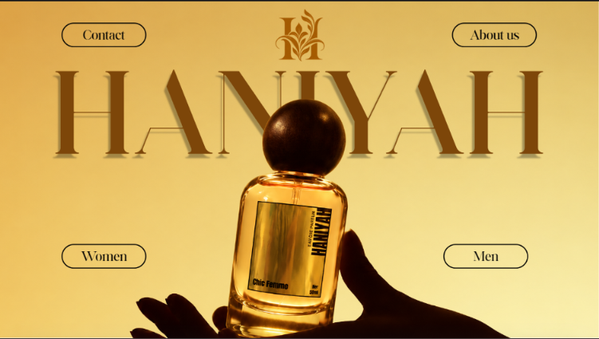
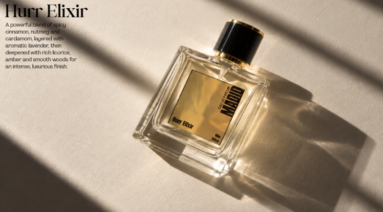
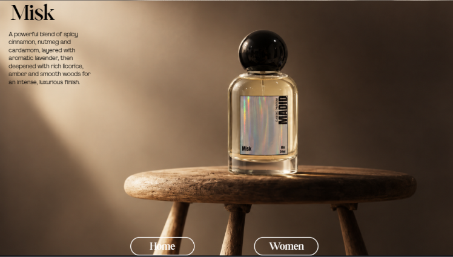

Perfume / Brand Identity / Digital Catalog
HANIYAH
BRAND DESIGN / LOGO DESIGN / PRODUCT IMAGE EDITING / COPYWRITING / WEB DESIGN
A refined perfume brand presentation built with a softer, luxurious visual language — from logo and product imagery to scent descriptions and a catalog-style website.
Hero / Landing screen

01 / The project
FROM
SCENT LINE
TO BRAND
WORLD.
HANIYAH is a perfume brand I created for my mother. It needed more than product photos: a mood, a visual identity, and a more intentional way to present the collection. I created the logo direction, developed the branding, edited product images, and wrote scent and product descriptions for a complete digital catalog experience.
02 / The challenge
MAKE IT FEEL
CLASSY, NOT COLD.
The challenge was building a luxurious look without making the brand feel distant. That meant balancing warmth, softness, and elegance — using restrained color, clean typography, and carefully treated product visuals rather than noisy decoration.
03 / Product presentation
PRODUCTS SHOWN
WITH INTENTION.


The product pages were designed to feel editorial and calm. Each layout lets the bottle stay central while the supporting text adds context without competing for attention.
04 / Website direction
A CATALOG THAT
FEELS ELEVATED.
Goal: present the collection in a way that feels premium, clear, and easy to browse.
05 / My role
WHAT I HANDLED.
LOGO / BRAND FEEL / PRODUCT IMAGE EDITING / SCENT DESCRIPTIONS / CATALOG DESIGN
The focus was to make HANIYAH feel polished, inviting, and visually consistent from start to finish.